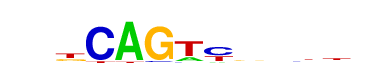

| p-value: | 1e-569 |
| log p-value: | -1.311e+03 |
| Information Content per bp: | 1.680 |
| Number of Target Sequences with motif | 1406.0 |
| Percentage of Target Sequences with motif | 9.23% |
| Number of Background Sequences with motif | 554.1 |
| Percentage of Background Sequences with motif | 1.66% |
| Average Position of motif in Targets | 39.3 +/- 17.7bp |
| Average Position of motif in Background | 48.4 +/- 34.3bp |
| Strand Bias (log2 ratio + to - strand density) | -0.3 |
| Multiplicity (# of sites on avg that occur together) | 1.03 |
| Motif File: | file (matrix) reverse opposite |
| Rank | Match Score | Redundant Motif | P-value | log P-value | % of Targets | % of Background | Motif file |
| 1 | 0.969 | 1e-561 | -1293.620902 | 7.99% | 1.22% | motif file (matrix) | |
| 2 | 0.938 | 1e-446 | -1027.494914 | 7.03% | 1.21% | motif file (matrix) | |
| 3 | 0.870 | 1e-349 | -805.452988 | 5.20% | 0.83% | motif file (matrix) | |
| 4 | 0.707 |  | 1e-338 | -778.360879 | 30.51% | 17.45% | motif file (matrix) |
| 5 | 0.756 | 1e-336 | -775.773229 | 33.39% | 19.83% | motif file (matrix) | |
| 6 | 0.885 | 1e-336 | -775.625064 | 10.41% | 3.33% | motif file (matrix) | |
| 7 | 0.875 | 1e-314 | -724.194069 | 13.50% | 5.34% | motif file (matrix) | |
| 8 | 0.756 | 1e-93 | -214.292132 | 2.55% | 0.73% | motif file (matrix) | |
| 9 | 0.761 | 1e-40 | -92.281156 | 0.31% | 0.02% | motif file (matrix) | |
| 10 | 0.695 | 1e-24 | -57.410944 | 0.25% | 0.03% | motif file (matrix) | |
| 11 | 0.673 | 1e-10 | -24.905256 | 6.82% | 5.55% | motif file (matrix) |